流程总览
本教程说明一次 OZON 复制发品的标准路径：先确认店铺接入方式，再在 OZON 铺货页选择参考店铺、读取商品、选择需要复制的商品生成草稿，按标签选择目标店铺后提交发品，并在铺货明细中观察自动刷新，最后终止任务。
创建 OZON 店铺
进入 店铺接入 → 店铺管理，点击 新建店铺。在抽屉中将 所属平台 切换为 Ozon，展开 店铺凭证。
- 填写店铺名称、平台店铺 ID、显示名等基础信息。
- 所属平台选择 Ozon 后，凭证区会变为
Client-Id与Api-Key。 - 保存前确认 Client-Id 是正整数，Api-Key 与店铺匹配。
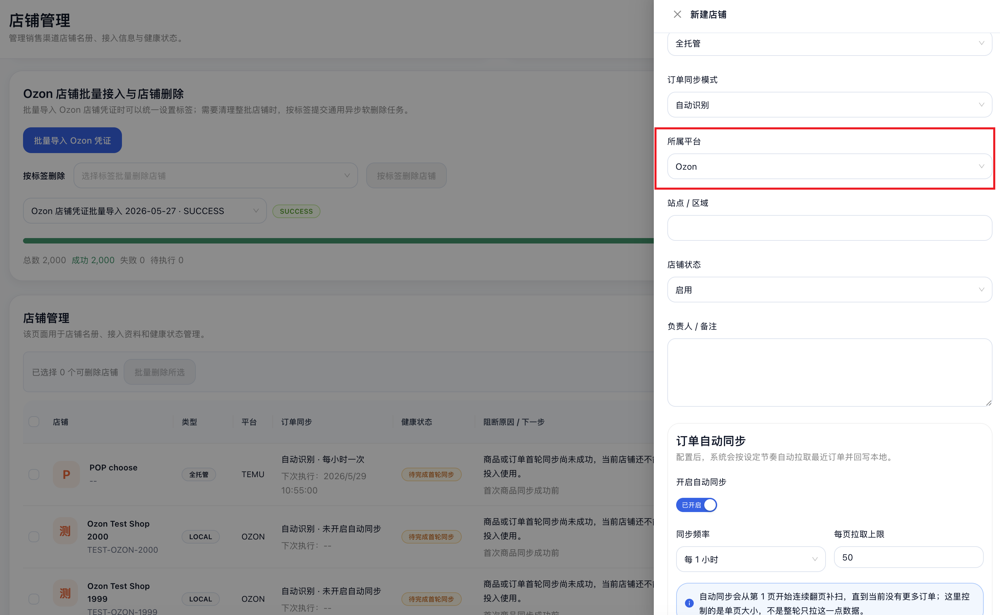
批量导入 OZON 店铺
在店铺管理页点击 批量导入 Ozon 凭证。批量导入适合一次接入大量假店铺或测试店铺，并给整批店铺统一设置标签。
- 下载导入模板。
- 在模板中填写绑定名称、店铺 ID、店铺名称、Client-Id、Api-Key。
- 可填写统一标签，例如“压测 2000 店铺异步铺货”。
- 上传后检查预览表格，确认无误再提交导入任务。
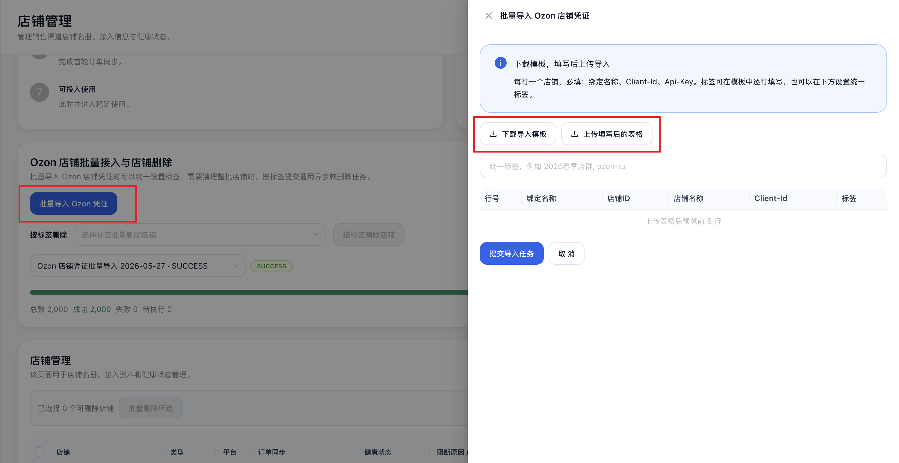
进入 OZON 复制发品
进入 商品中心 → Ozon 铺货，切换到 复制 Ozon 商品。参考店铺选择“ozon 店铺 1”；如果当前环境展示的是测试数据，可以选择对应的测试 OZON 参考店铺。
- 确认页头为 Ozon 铺货中心。
- 切换分段控件到 复制 Ozon 商品。
- 选择参考店铺后，点击 读取 Ozon 商品。
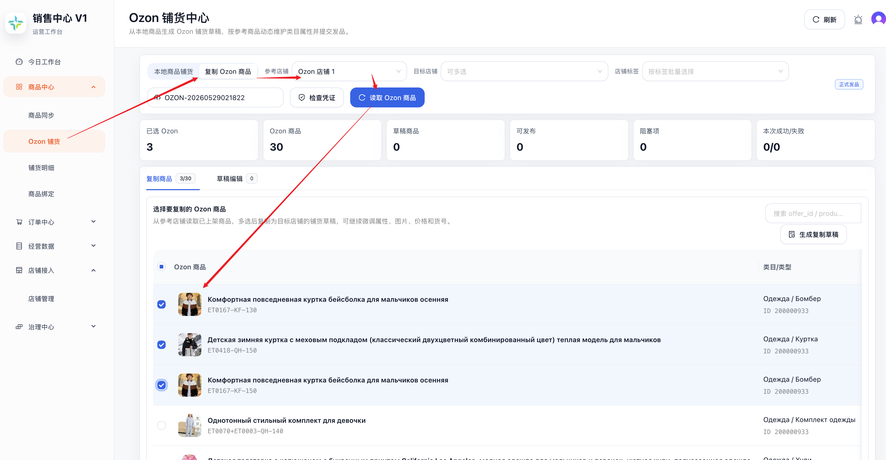
加载商品并勾选商品
点击 读取 Ozon 商品 后，页面会加载参考店铺商品列表。按本次铺货需要勾选要复制的商品，用于生成复制草稿。
- 等待商品表格出现商品名称、offer_id、product_id、价格、库存等信息。
- 勾选本次需要复制到目标店铺的商品。
- 确认顶部指标中“已选 Ozon”数量与勾选结果一致。
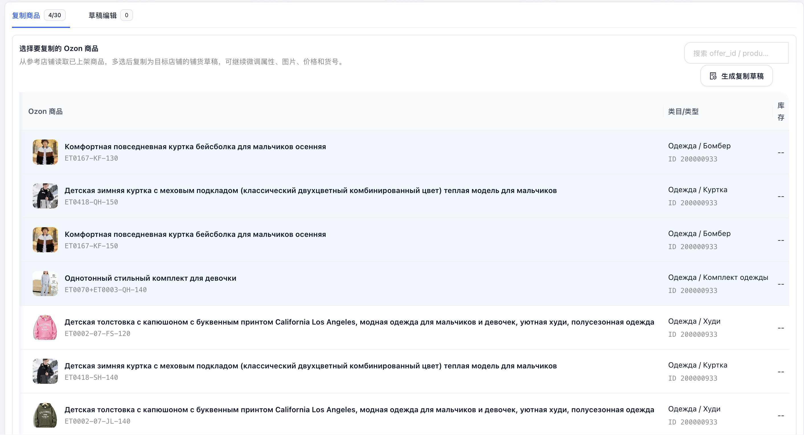
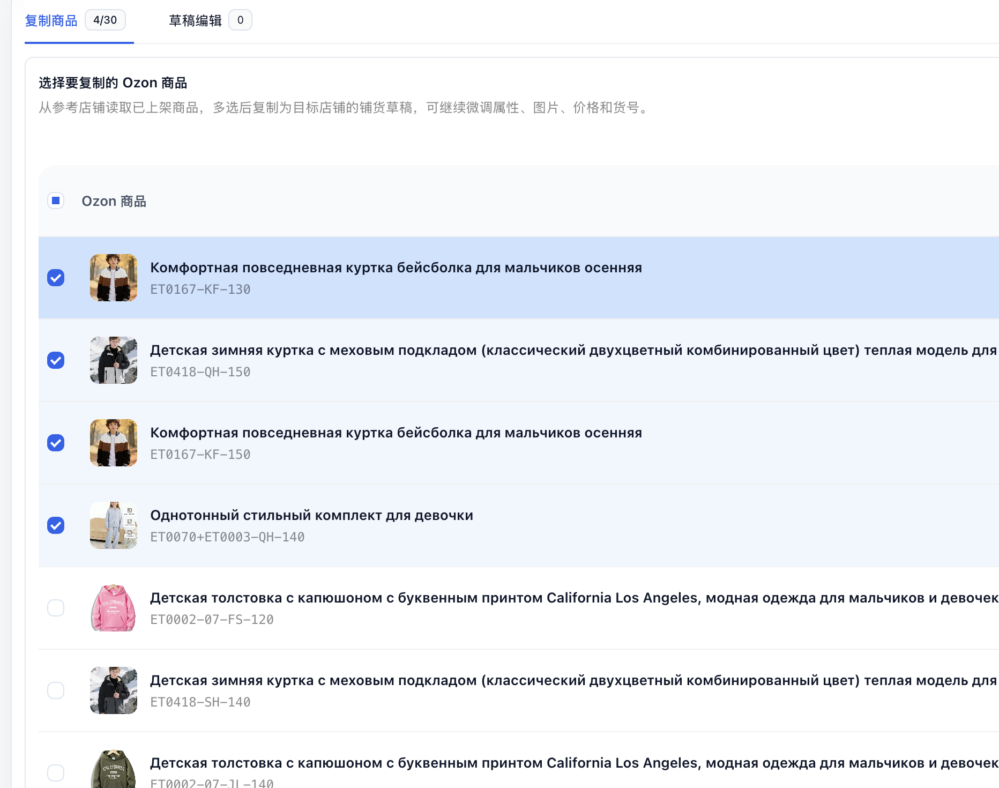
生成复制草稿
勾选商品后点击 生成复制草稿。系统会为本次选择生成新的草稿数据，并进入草稿编辑区域。
- 检查草稿商品数是否等于已选商品数。
- 保持草稿编辑表格的横向宽表格视图，便于检查标题、货号、类目、属性、价格、图片等字段。
- 本流程不再管理历史草稿；每次发品都重新生成草稿。
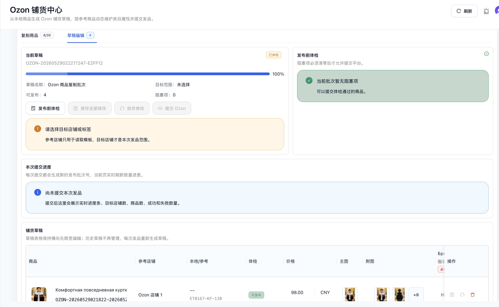
按标签选择目标店铺
在顶部 店铺标签 中选择目标店铺标签。系统会按标签批量选择目标店铺，并在目标店铺区域显示已选数量。
- 选择测试用标签，例如包含 2000 个假店铺的压测标签。
- 确认目标店铺数量符合预期。
- 假店铺任务全部失败属于预期，不影响教程演示。
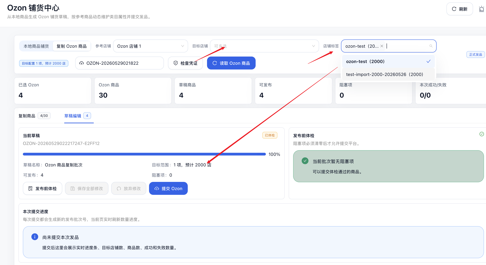
提交 OZON 发品
确认草稿可发布数量和目标店铺后，点击 提交 Ozon。每次提交都应该生成一个新的发布批次号，避免复用旧批次造成明细中批次号重复。
- 提交前确认“可发布”数量大于 0。
- 点击提交后，等待页面展示新批次号和实时进度。
- 记录批次号，例如
OZON-PUB-YYYYMMDD...。
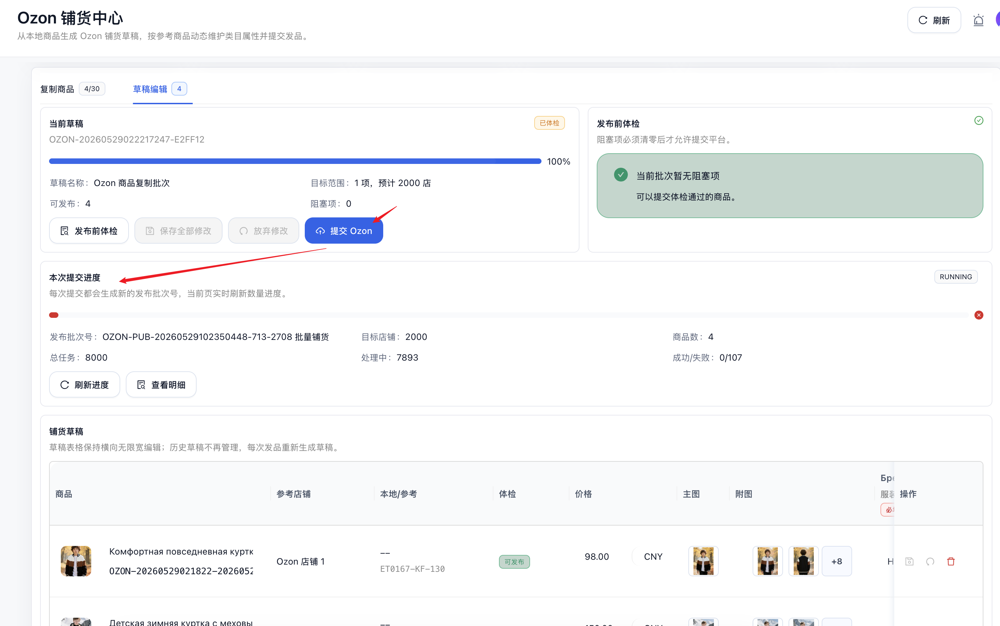
查看任务进度与铺货明细
提交后进入 铺货明细。明细页应展示批次状态、商品数、目标店铺数、任务数、成功/失败/待执行数量，以及自动刷新的进度条。
- 在批次列表中找到刚刚生成的新批次。
- 确认状态从“执行中”开始变化。
- 点击批次号进入明细表，观察状态和数量自动刷新。
- 如果任务失败，结果/失败原因列会展示 OZON 接口或凭证相关错误。
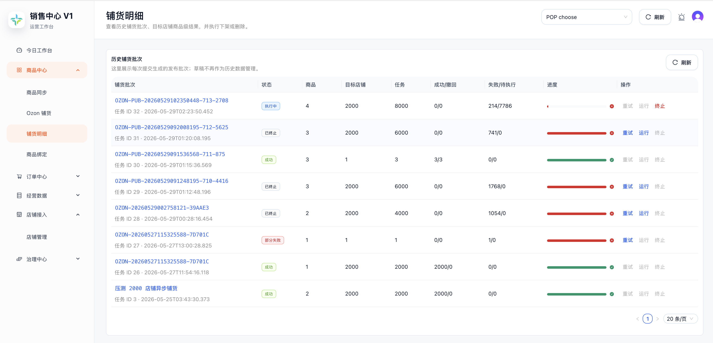
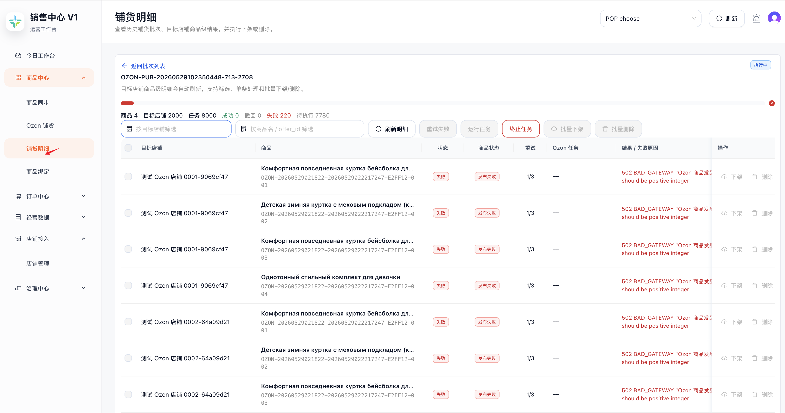
终止发布中的任务
发布中的批次任务提供 终止 按钮。点击后任务会停止继续执行，已完成的任务保持成功或失败状态，未执行部分进入终止相关状态。
- 在批次列表或明细页找到状态为“执行中”的批次。
- 点击 终止 并确认。
- 刷新后状态应变为“已终止”，操作区可看到后续可用动作，例如运行或重试。
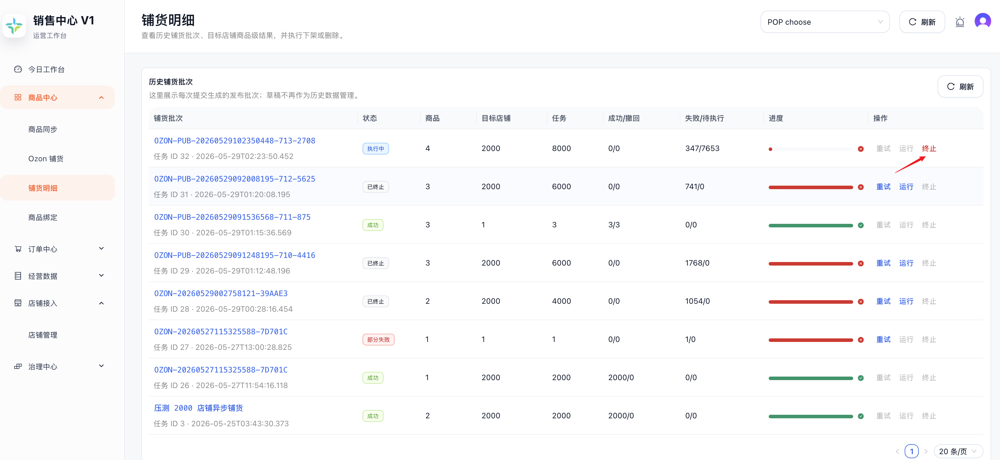
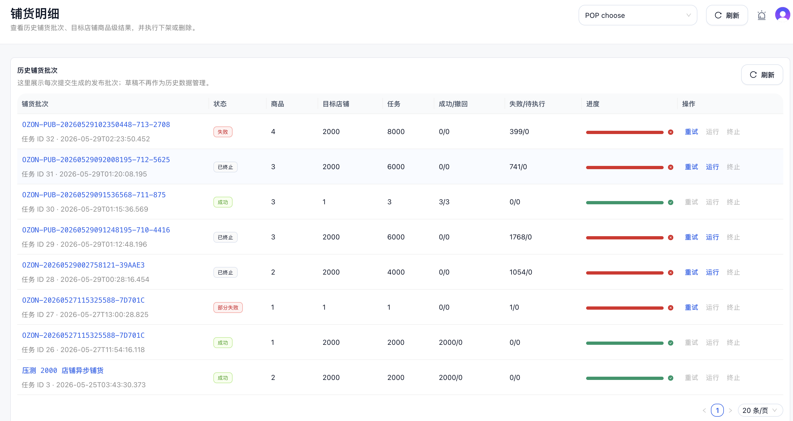
关键规则
- 每次提交都生成新批次：同一个草稿点击修改信息后重新提交，也必须生成新的批次号。
- 草稿不作为历史数据管理：每次发品都重新生成草稿，历史页只展示发布批次。
- 运行会跳过已成功任务：已终止任务点击运行时，只恢复未完成、已跳过或可继续执行的任务，不重复发布已成功任务。
- 失败任务可重试：失败或部分失败批次提供重试按钮，仅重试失败项。
- 执行中可终止：终止后停止后续任务，已成功的明细不回滚。
- 明细自动刷新：批次列表和批次明细应自动刷新状态、进度条和数量信息。